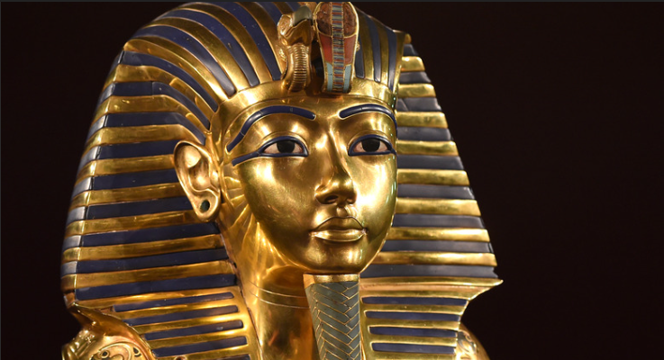
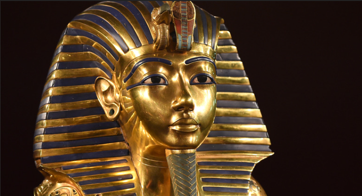

Հին Եգիպտոս (հին հունարեն՝ Αἴγυπτος և լատին․՝ Aegyptus), Հին աշխարհի պատմական շրջանի և քաղաքակրթության նշանակալի մշակույթի անվանում։ Գոյություն է ունեցել Աֆրիկայի հյուսիս-արևելքում՝ Նեղոս գետի ստորին հոսանքի երկայնքով։ Նախապատմական Եգիպտոսը 3100 թվականին (ըստ եգիպտական պայմանական ժամանակագրության)[1], որը քաղաքականապես միավորեց Վերին և Ստորին Եգիպտոսները՝ Մենեսի գլխավորությամբ (հաճախ նույնականացվում էր Նարմերի հետ)[2]։ Հին Եգիպտոսի պատմությունը բաժանված է պայմանական ժամանակաշրջաններով. հին թագավորությունը համապատասխանում է Վաղ Բրոնզե դարին, Միջին Թագավորությունը՝ Միջին Բրոնզե դարին և Նոր թագավորությունը՝ Ուշ Բրոնզե դարին։ Եգիպտոսը հասավ իր հզորության գագաթնակետին Նոր Թագավորության ժամանակաշրջանում, որը կառավարում էր Նուբիայի մեծ մասը և Մերձավոր Արևելքի զգալի մասը, որից հետո այն դանդաղ անկում է ապրում։ Իր պատմության ընթացքում Եգիպտոսը նվաճվել է մի շարք օտար ուժերի կողմից, այդ թվում՝ հիքսոսների, լիվիացիների, նուբիացիների, ասորեստանցիների, Աքեմենյան պարսիկների կողմից և մակեդոնացիների՝ Ալեքսանդր Մակեդոնացու հրամանատարությամբ։ Ալեքսանդրի մահից հետո ձևավորվեց Հռոմեական Պտղոմեոսյան Թագավորությունը, որը ղեկավարեց Եգիպտոսը մինչև մ.թ.ա. 30 թվականը, երբ Կլեոպատրան գերի ընկավ Հռովմեական Կայսրությանը, և Եգիպտոսը դարձավ հռոմեական պրովինցիա[3]։ Հին Եգիպտական քաղաքակրթության հաջողությունը մասնակիորեն կապված էր գյուղատնտեսությունից, Նեղոս գետի պայմաններին հարմարվելու ունակությունից։ Նեղոսի վարարումներից և ոռոգումներից առաջանում էին բերրի դաշտավայրեր, որոնք նպաստում էին գյուղատնտեսության զարգացմանը։ Եգիպտոսի կառավարությունը խրախուսել է հովտային հանքավայրերի շահագործմանը և հարակից ամայի շրջանների օգտագործմանը, խմբային շինարարական աշխատանքներին և գյուղատնտեսական նախագծերի կազմակերպմանը, շրջակա շրջանների հետ առևտրի իրականացմանը, ինքնուրույն վաղ գրավոր համակարգի զարգացմանը, զինված ուժերին, որոնք նպատակ ունեին դիմակայել օտարերկրյա թշնամիններին և նպաստել Եգիպտոսի հաստատմանը։ Այս գործունեությունը խթանելու և կազմակերպելու համար եղել են ազնվական գրագիրներ, կրոնական առաջնորդներ և կառավարիչների բյուկրատիա, որոնք վերահսկվում էին փարավոնի կողմից, որը ապահովում էր եգիպտական ժողովրդի համագործոկցությանը և միասնությանը՝ կրոնական համոզմունքների համատեքստում[4][5]։ Հին Եգիպտացիների բազմաթիվ ձեռքբերումներց էին քարհանքերի և շինարարական տեխնիկան, որոնք նպաստում էին մոնումենտալ բուրգերի, տաճարների և սրբավայրերի կառուցմանը, մաթեմատիկայի համակարգը, գործնական բժշկության արդյունավետ համակարգը, ոռոգման համակարգերը և գյուղատնտեսական արտադրության տեխնիկան, առաջին հայտնի տախտակե նավակները, եգիպտական հախճապակին և ապակե ճարտարարարվեստը, գրականության նոր ժանրերը և խեթերի հետ կնքված առաջին հռչակավոր խաղաղության պայմանագրերը[6]։ Հին Եգիպտոսը կայուն ժառանգություն է թողել։ Նրա արվեստը և ճարտարապետությունը լայնորեն տարածված էին և նրա հագույն իրերեը տարածվեցին աշխարհի հեռավոր անկյուներում։ Ժամանակակից եվրոպացիների կողմից Եգիպտոսում իրականցված պեղումները և հագույն գտածոների հայտնաբերումը հանգեցրին եգիպտական քաղաքակրթության գիտության զարգացմանը և նրա մշակութային ժառանգության ավելի բարձր գնահատմանը[7]։

 



Նեղոսը իր տարածաշրջանի մարդկության համար ամբողջ պատմության ընթացքում եղել է փրկության օղակ[8]։ Նեղոսի բերրի գետահովիտները մարդկանց հնարավորություն էին տալիս զբաղվել գյուղատնտեսությամբ[9]։ Նեղոսի հովտում սկսել են ապրել մոտ 120.000 տարի առաջ։Նախապատմական ժամանակաշրջանում Եգիպտոսի կլիման նվազ արգասաբեր էր, քան այսօր։ Եգիպտոսի խոշոր շրջանները ծածկված էին սավաննաներով, որտեղով անցնում էին անասունների հոտերը։ Բոլոր շրջաններում բուսականությունը և կենդանական աշխարհը հարուստ էր և Նեղոսը իր վարարումներով աջակցում էր բնակչությանը։ Որսորդությունը տարածված զբաղմուն էր բոլոր եգիպտացիների համար նաև այն ժամանակաշրջանում, երբ շատ կենդանիներ դեռ ընտելացված չէին[10]։ Սկսած մ.թ.ա. 5500 թվականից Նեղոսի հովտում ապրող փոքր ցեղերը մի շարք մշակույթների կրողն են եղել, որն արտահայտվել է անասնապահության, գյուղատնտեսության, երկրագործության մեջ և նրանք հայտնի են իրենց խեցեղենով ու անձնական իրերով, ինչպիսիք են սանրերը, ապարանջանները և ուլունքներով։ Այս վաղ մշակույթների ամենամեծ կենտրոնը Վերին (հարավային ) Եգիպտոսում գտնվող Բադարի քաղաքն էր, որն հայտնի էր իր բարձրորակ կերամիկայով, քարե և պղնձե գործիքներով[11]։ Նեկենից գտնված վաղ գերեզմանի նկար մ.թ.ա. 3500 թվական. Նաքադա, հավանաբար Գերզեհ մշակույթ Բադարիին հաջորդեց Ամրատիան (Նաքադա I) և Գերզեն[12] (Նաքադա II), որոնք բերեցին մի շարք տեխնոլոգիական բարեփոխումներ։ Մինչև Նաքադա I -ի ժամանակաշրջանը եգիպտացիները ենթադրաբար Եթովպիայից վերցրել են օպսիդիանը, դրանից պատրաստել շեղբեր և այլ քարե գործիքներ[13] : Նաքադա II-ի ժամանակաշրջանում գոյություն ունեն Մերձավոր Արևելքի, մասնավորապես Քանանայի, Բինլոսի ափերի հետ շփման վաղ պացույցներ[14]։ Մոտ 1,000 տարիների ընթացքում Նագադայի մշակույթը զարգացավ, հզոր քաղաքակրթության մեջ ստեղծվեցին մի քանի փոքր գյուղատնտեսական համայնքներ, որի ղեկավարները լիովին վերահսկում էին Նեղոսի հովիտի մարդկանց և ռեսուրսները[15]։ Նեկենում (հունարեն Հիերիկոնպոլիս), իսկ ավելի ուշ Աբիդոսում իշխանության կենտրոն հիմնելիս Նաքադա III-ը ընդլայնել է Եգիպտոսի հյուսիսային ուղղությունը Նեղոսի երկանքով[16]։ Նրանք նաև առևտրական կապեր էին հաստատում Նուբիայի հարավային շրջանների հետ[16]։ Նաքադայի մշակույթը ստեղծում էր տարատեսակ նյութական մշակութային իրեր, որոնք արտացոլում էին բարձր խավի աճող ուժն ու հարստությունը, ինչպես նաև նրանց անձնական օգտագործման իրերը, որոնք ներառում էին սանրեր, փոքր արձանիկներ, ներկված խեցեղեն, բարձրորակ դեկորատիվ քարե ծաղկամաններ, կոսմետիկ հարդարման միջոցներ, ոսկուց, լապիսից ու փղոսկրից պատրաստված զարդեր։ Նրանք նաև մշակեցին կերամիկական ջնարակ, որը հայտնի է նաև որպես ֆայենցիա, որը օգտագործվել Հռոմում գավաթների, զմուռսների և ֆիգուարանների զարդարման համար[17]։ Նագադայի մշակույթի վերջին շրջանում սկսեցին օգտագործել գրավոր խորհրդանիշներ, որոնք ի վերջո մշակվեցին դառնալով հիերոգլիֆներ, որոն օգտագործվելու էր հին եգիպտական լեզուն գրելու համար[18]։ Վաղ դինաստիական ժամանակաշրջան (մ.թ.ա. 3050– մ.թ.ա.2686 ) Հիմնական հոդված՝ Եգիպտոսի Վաղ դինաստիական ժամանակաշրջան Միջագետքի շումերա-աքադական քաղաքակրթությանը և հին Էլամին։ Մ.թ.ա. երրորդ դարում եգիպտացի քուրմ Մանեթոն կանոնակարգեց Մենես փարավոնի դինասիան մինչև իր ժամանակաշրջանի 30 դինաստիաները, որն պահպանվել է մինչ օրս[19]։ Եվ Նա իրեն հռչակեց Մենի (հունարեն Մենես)փարավոնի օրինական իրավահաջորդ, ով հավատում էր, որ միավորել է Վերին և Ստորին Եգիպտոսները (շուրջ մ.թ.ա 3100)[20]։ Միավորված պետականացումը աստիճանաբար տեղի ունեցավ, քան ներկայացրել են հնագույն եգիպտացի գրողները, հատկապես որ Մենես փարավոնի ժամանակաշրջանին վերաբերող արձանագրություններ չկան։ Այժմ որոշ գիտնականներ հավատում են, որ առասպելական Մենեսը կարող է լինել փարավոն Նարմերը, ով պատկերված է թագավորական ծիսական Narmer Palette-ում որպես վերամիավորման խորհրդանշան[21]։ Մոտ մ.թ.ա. 3150 թվականին վաղ դինաստիական շրջանի առաջին փարավոններից մեկը Մեմֆիսը մայրաքաղաք հիմնելու միջոցով կարողանում էր հսկել դելտայի տարածաշրջանի բերրի տարածքները, գյուղատնտեսությանը, ինչպես նաև եկատմտաբեր Լևանտայի հետ առևտրային երթուղիները։ Հին տոհմական ժամանակաշրջանում փարավոնների աճող ուժն ու հարստությունը արտացոլվում էին իրենց դամբարաններում և պաշտամունքային կառույցներում, որոնք հիշատակում էին մահացած փարավոնին[21]։ Փարավոնների կողմից ստեղծված հզոր թագավորությունը ծառայեց օրիկանացնելու հողի, աշխատանքի և ռեսուրսների պետական վերահսկողությունը, որոնք անհրաժեշտ էին հնագույն եգիպտական քաղաքակրթության գոյատևման և աճի համար[22]։Ճարտարապետության, արվեստի և տեխնոլոգիաների խոշոր առաջընթացները կատարվել են Հին Թագավուրության ժամանակ, որը մեծապես նպաստեց գյուղատնտեսությանը և բնակչության թվաքանակի աճին, ինչը հնարավոր դարձավ զարգացած կենտրանական վարչակազմի ստեղծմանը[24]։ Հին Եգիպտոսի նվաճումներից էր Գիզայի բուրգերը և Մեծ Սֆինքսը, որոնք կառուցվել են Հին թագավորության ժամանակ։ Կառավարիչների հրամանների ներքո պետական պաշտոնյանները հավաքում էին հարկեր համակարգված ոռոգման ծրագրեր իրականացնելու համար, բերքատվությունը բարելավելու համար շինարարական նախագծեր իրականացնելու համար և արդարադատության համակարգ՝ խաղաղություն և և կարգ պահպանելու համար[25]։ Խաֆրե Էնթարե Եգիպտոսում կենտրոնական վարչակազմի բարձրացման կարևորության պատճառով առաջացել էր կրթված գրագիրների և պաշտոնյաների նոր դաս, ովքեր իրենց ծառայությունների դիմաց փարավոնի կողմից վճարվում էին սեփականությամբ։ Փարավոնները հողատարածքներ նվիրաբերել են իրենց մահվան և տեղական տաճարներին, որպեսզի նրա մահվանից հետո բավարար ռեսուրներ ունենան նրա երկրպագելու։ Սակայն գիտնականները կարծում են, որ այդ երևույթը Եգիպտոսում հինգ դարերի ընթացքում աստիճանաբար խափանեց տնտեսության կենսունակությունը, և տնտեսությունը այլևս չկարողացավ աջակցել մեծ կենտրոնացված վարչակազմին[26]։ Որպես փարավոնների ուժի նվազում՝ Եգիպտոսի նահանգների կառավարիչները սկսեցին վիճարկել փարավոնի ուժի գերակայությունը։ Սա մ.թ.ա. 2200 մինչև մ.թ.ա. 2150 թվականներն ընկած ժամանակահատվածն էր։ Ենթադրվում է, որ երկիրը գտնվում էր 140 -ամյա սովի և կռվի մեջ, որը հայտնի է որպես առաջին միջանկյալ ժամանակաշրջան[27]։

.jpg)


Հիմնական հոդված՝ Եգիպտոսի Հին թագավորություն Ճարտարապետության, արվեստի և տեխնոլոգիաների խոշոր առաջընթացները կատարվել են Հին Թագավուրության ժամանակ, որը մեծապես նպաստեց գյուղատնտեսությանը և բնակչության թվաքանակի աճին, ինչը հնարավոր դարձավ զարգացած կենտրանական վարչակազմի ստեղծմանը[24]։ Հին Եգիպտոսի նվաճումներից էր Գիզայի բուրգերը և Մեծ Սֆինքսը, որոնք կառուցվել են Հին թագավորության ժամանակ։ Կառավարիչների հրամանների ներքո պետական պաշտոնյանները հավաքում էին հարկեր համակարգված ոռոգման ծրագրեր իրականացնելու համար, բերքատվությունը բարելավելու համար շինարարական նախագծեր իրականացնելու համար և արդարադատության համակարգ՝ խաղաղություն և և կարգ պահպանելու համար[25]։ Խաֆրե Էնթարե Եգիպտոսում կենտրոնական վարչակազմի բարձրացման կարևորության պատճառով առաջացել էր կրթված գրագիրների և պաշտոնյաների նոր դաս, ովքեր իրենց ծառայությունների դիմաց փարավոնի կողմից վճարվում էին սեփականությամբ։ Փարավոնները հողատարածքներ նվիրաբերել են իրենց մահվան և տեղական տաճարներին, որպեսզի նրա մահվանից հետո բավարար ռեսուրներ ունենան նրա երկրպագելու։ Սակայն գիտնականները կարծում են, որ այդ երևույթը Եգիպտոսում հինգ դարերի ընթացքում աստիճանաբար խափանեց տնտեսության կենսունակությունը, և տնտեսությունը այլևս չկարողացավ աջակցել մեծ կենտրոնացված վարչակազմին[26]։ Որպես փարավոնների ուժի նվազում՝ Եգիպտոսի նահանգների կառավարիչները սկսեցին վիճարկել փարավոնի ուժի գերակայությունը։ Սա մ.թ.ա. 2200 մինչև մ.թ.ա. 2150 թվականներն ընկած ժամանակահատվածն էր։ Ենթադրվում է, որ երկիրը գտնվում էր 140 -ամյա սովի և կռվի մեջ, որը հայտնի է որպես առաջին միջանկյալ ժամանակաշրջան[27]։ Առաջին միջանկյալ ժամանակաշրջան (մ.թ.ա. 2181– մ.թ.ա. 1991) Հիմնական հոդված՝ Եգիպտոսի առաջին միջանկյալ ժամանակաշրջան Հին Թագավորության վերջում Եգիպտոսի կենտրոնական կառավարության փլուզումից հետո կառավարությունը չէր կարողանում աջակցել և կայունացնել երկրի տնտեսությունը։ Երկրում տիրող ճգնաժամի ժամանակ տարածաշրջանային կառավարիչները չստանալով փարավոնի աջակցությունը և երկրում տիրող սովն ու քաղաքական վեճերը հանգեցրին փոքրածավալ քաղաքացիկան պատերազմների։ Տեղական ղեկավարման մարմինները օգտվելով երկրում տիրող իրավիճակից, որոնք ոչ մի տուրք չէին վճարում փարավոնին, հռչակեցին իրենց անկախությոնը՝ օգտագործելով իրենց անկախությունը նահանգներում բարգավճող մշակույթ ստեղծելու համար։ Սեփական ռեսուրսների վերահսկողության ներքո նահանգները տնտեսապես դարձան ավելի հարուստ, ինչը ցույց տվեց բոլոր սոցիալական դասերի շրջանում ավելի մեծ ու լավ կառուցված գերեզմանատները[28]։ Գավառական արհետավորները որդեգրեցին և հարմարվեցին նոր մշակույթում ստեղծվող զարդանախշերին, որոնք նախկինում սահմանափակված էին Հին Թագավրության ժամանակաշրջանում, իսկ գրագիրները մշակեցին գրական նոր ոճեր, որոնք արտահայտեցին ժամանակի լավատեսությունը և ինքնատիպությունը[29]։ Տեղական կառավարիչները ազատվելով Փարավոնի իշխանությունից սկսեցին պայքարել տարածքային վերահսկողության և քաղաքական իշխանության համար։ Մթ.ա. 2160 թվականին Հերակլեոպոլիսում ղեկավարները կառավարում էին Ստորին Եգիպտոսի հյուսիսային մասը, մինչդեռ նրա մրցակից կլանը, որը գտնվում էր Թեբեում և Ինթեֆ դինաստիան վերահսկում Էր Վերի Եգիպտոսի հարավը։ Քանի որ Ինթեֆ դինաստիայի իշխանությունը աճեց և դեպի հյուսիս ընդլայնվեց նրա վերահսկողությունը անխուսափելի դարձավ երկուդինաստիաների բախումն ու մրցակցությունը։ Մոտ մ.թ.ա. 2055 թվականին հյուսիսային Թեբեն ընկավ Նեբհեպետրե Մենտուհոտեպ II -ի գերագայության տակ, սական ի վերջո հաղթել է Հերակլեոպոլիթանի կառավարիչները, որոնք միավորեցին երկու Եգիպտոսները։ Սկսվեց տնտեսական և մշակութային վերածննդի նոր ժամանակաշրջան, որը հայտնի է որպես Միջին Թագավորություն[30] Միջին թագավորություն (մ.թ.ա. 2134– մ.թ.ա.1690) Հիմնական հոդված՝ Եգիպտոսի միջին թագավորություն Ամինհոտեպ III, Միջին Թագավորության վերջին մեծ տիրակալը Միջին Թագավորության փարավոնները վերականգնել են երկրի կայունությունը և բարգավաճումը՝ դրանով իսկ խթանելով արվեստի, գրականության և հուշարձանների շինարարական աշախատանքների վերականգմանը[31]։ Մենտուհոտեպ II -ը և նրա Տասնմեկերորդ դինաստիայի ժառանգորդները կառավարում էին Թեբեից, բայց կառավարիչ Ամենեմհատ I-ը մ.թ.ա. 1985 թվականին՝ Տասներկուերորդ Դինաստիայի սկզբում, ստանձնելով իշխանությունը՝ մայրաքաղաքը տեղափոխեց Իջթավեյ, որը տեղակայված էր Ֆայումում[32]։ Իջթավեից Տասներկուերորդ Դինաստիայի փարավոնները ձեռնամուխ եղան տարածաշրջանի գյուղատնտեսական արտադրանքի ավելացմանը, հողատարածքների վերականգման և ոռոգման սխեմաների մշակմանը։ Բացի այդ, Նուբիայում գտնվող ռազմական հողատարածքները, որոնք հարուստ էին քարհանքերով և ոսկու հանքերով,Արևելյան դելտայում աշխատողները կառուցեցին պաշտպանական կառույց, որը կոչվեց «դարպասներ», որը պաշտպանելու էր օտարերկրյա հարձակումներից[33]։ Փարավոնները, որոնք երկիրը ապահովում էին ռազմականորեն և քաղաքականապես, գյուղատնտեսությամբ և հանքարդյունաբերությամբ, նպաստում էին նաև բնակչության աճի զարգացմանը, արվեստի ու կրոնի ծաղկմանը։ Վերնախավի վերաբերմունքը աստվածների նկատմամբ ի տարբերություն Հին Թագավորության, Միջին Թագավորությունում բարձրացվում էր անհատի պաշտամունքը[34]։ Միջին Թագավորությում գրված գրականությում նկարագրվում էին բարդ թեմաներ և հերոսներ, որոնք գրված էին վստահ, պերճախոս լեզվով[29]։ Այդ ժամանակի խորաքանդակները և դիմանկարները գրավում էին իրենց նուրբ, անհատական մանրամսներով, որոնք հասել էին տեխնիկական բարդության նոր բարձունքների[35]։ Միջին թագավորության ամենանշանավոր կառավարիչը Ամենեմհատ III-ն էր, ով թույլ տվեց սեմախոս քանանաիցիներին թույլատրում է վերաբնակվել Մերձավոր Արևելքից դեպի Դելտայի շրջաններ բավարար աշխատուժ ապահովելու համար, հատկապես հանքարդյունաբերության և շինարարական աշխատանքների համար։ Սակայն այս հսկայական շինարարական և հանքարդյունաբերական աշխատանքները, այնուամենայնիվ, զուգորդվում էին Նեղոս գետի վարարումներով, իսկ ավելի թագավորությունները հետևողական են եղել տնտեսության նկատմամբ, բայց Միջին Թագավորության ժամանակ տնտեսությունը դանդաղ անկում է ապրում, հետագայում տասներեքերորդ և տասնչոչսերոդ դինաստիաների ընթացքում։ Այս անկման ժամանակ, քանանցի բնակիչները սկսեցին ավելի շատ վերահսկել Դելտայի շրջանը, և ի վերջո Եգիպտոսում իշխանության գլուխ անցան հիքսոսները[36]։ Երկրորդ միջանկյալ ժամանակաշրջան (մ.թ.ա.1674– մ.թ.ա.1549 ) և հիքսոսներ Հիմնական հոդված՝ Եգիպտոսի երկրորդ միջանկյալ ժամանակաշրջան Հին Եգիպտոսի առավելագույն տարածքը (մ.թ.ա15-րդ դար) Քանի որ Միջին Թագավորության փարավոնների ուժը թուլացավ մ.թ.ա. 1785 թվականին Արևմտյան Ասիայի ժովուրդը, որոնք կոչվում էին հիքսոսներ և արդեն բնակություն էին հաստատել Դելտայում, գրավեցին Եգիպտոսը և Ավարիսը հռչակեցին Եգիպտոսի նոր մայրաքաղաք, ստիպելով նախկին կենտրոնական կառավարությանը նահանջել Թեբե։ Փարավոնը ընկալվում էր որպես վասսալ և պետք է տուրք վճարեր[37]։ Հիքսոսները («օտար իշխաններ») պահպանեցին Եգիպտոսի կառավարման մոդելը և նրանք ճանաչվեցին որպես փարավոններ, դրանով իսկ եգիպտական տարրերը ներմուծեցին իրենց մշակույթ։ Նրանք և մյուս զավթիչները Եգիպտոս ներմուծեցին պատերազմ վարելու նոր եղանակներ, հատկապես աղեղն և ձիաքարշ մարտակառքերը[38]։ Հարավից հեռանալուց հետո բնիկ թեբացի թագավորները հենց իրենք ընկան հյուսիսը իշխող քանանացի հիքսոսների և հարավից հիքսոսների նուբյան դաշնակից քուշանների միջև։ Մի քանի տարի վասալական կախման մեջ մնալուց հետո, Թեբեն բավականչափ ուժ էր հավաքում հիքսոսներին մարտահրավերը նետելու համար, որը տևեց ավելի քան 30 տարի մինչև մ.թ.ա. 1555 թվականը[37] : Փարավոններ Սեքեներա Տաո II -ը և Քամոսեն ի վերջո կարողացան հաղթահարել Եգիպտոսի հարավում գտնվող նուբիացիներին, սակայն չկարողացան հաղթել հիքսոսներին։ Սակայն այդ խնդիրը լուծեց Քամոսի իրավահաջորդ Ահմոսե I-ը, ով հաջողությամբ վարեց մի շարք արշավներ, որոնք մշտապես վերացրեցին հիքսոսների ներկայությունը Եգիպտոսում։ Նա հիմնեց նոր դինաստիա և Նոր Թագավորությունում հետևում էին, որ փարավոնների ուշադրության կենտրունում լինի բանակը և նրանք ձգտում էին ընդլայնել Եգիպտոսի սահմանները և փորձել ձեռք բերել Մերձավոր Արևելքի վարպետությունը[39]։ Նոր թագավորություն (մ.թ.ա.1549–1069 ) Հիմնական հոդված՝ Եգիտոսի նոր թագավորություն Նոր Թագավորության փարավոնները ստեղծեցին աննախադեպ բարգավաճման ժամանակաշրջան, պահպանելով երկրի սահմանները և ամրապնդեցին դիվանագիտական կապեր իրենց հարևանների, այդ թվում՝ Միտտանիի կայսրության, Ասորեստանի և Քանանի հետ։ Ռազմական արշավանքները վարում էին Թութմոս I-ը և նրա թոռ Թութմոս III-ը ընդարձակեցին փարավոնների ազդեցությունը լայնածավալ կայսրությունում և Եգիպտոսը տեսած չէր այսպիսի հզորություն։ Հաթշեփսոթի քարե արձանը Այդ երկու փարավոնների կառավարման միջև թագուհի Հաթշեփսուտը, ով հանդես է գալիս նաև որպես փարավոն, սկսեց բազմաթիվ շինարարական ծրագրերի իրագործումը, ներառյալ հիքսոսների կողմից վնասված տաճարների վերանորոգում և առևտրական կապերի հաստատում դեպի Փունտ և Սինա[40]։ Երբ մ.թ.ա. 1425 թվականին Թութմոս III-ը մահացավ, Եգիպտոսը կայսրություն էր, որը ձգվում էր Նիյաից Սիրիայի հյուսիս- արևմուտք և մինչև Նեղոսի չորրորդ քարվաստը, և թույլ տվեց մինչ այդ արգելված ամենանհրաժեշտ ապրանքների ներմուծումը, օրինակ ինչպիսիք էին բրոնզը և փայտը[41]։ Նոր թագավորության փարավոնները սկսսեցին լայնամաշտաբ շինարական աշխատանքներ, որը նպաստում էր Ամոն աստծո պաշտամունքին, որի պաշտամունքը հիմնականում աճում էր Կառնակում։ Նրանք կառուցեցին նաև հուշարձաններ՝ փառավորելու ինչպես իրական, այնպես էլ պատկերավոր ձեռքբերումները։ Կառնակի տաճարը երբևէ կառուցված ամենամեծ եգիպտական տաճարն էր[42]։ Մոտ մ.թ.ա.1350 թվականին Նոր թագավորության կայունությաը սպառնում էր, երբ Ամինհոտեպ IV-ը գահ բարձրացավ և մի շարք արմատական և քաոսային բարեփոխումներ սկսեց։ Նա իր անունը փոխելով Էխնաթոն գովաբանեց նախկինում աննշան արևի աստված Աթոնին, որպես գերագույն աստված, խափանեց շատ այլ աստվածների պաշտամունքը և մայրաքաղաքը տեղափոխեց նոր կառուցված քաղաք Ախեթաթոն ( ժամանակակից անվանումը Ամառնա)[43] : Նա նվիրված էր իր նոր կրոնին և արվեստի ոճին։ Նրա մահից հետո Աթոնի պաշտամունքը արագորեն մոռացվեց և վերականգնվեց ավանդական կրոնական կարգը։ Հետագա փարավոնները Թութանհամոնը, Այը և Հորեմհեբը աշխատել են ջնջել Էխնաթոնի, որը հայտնի է որպես Ամառնա ժամանակաշրջան[44]։ Ռամզես II-ի չորս հսկայական արձանները, որոնք տեղակայված են նրա Աբու Սիմբել տաճարի կողային հատվածում Մ.թ.ա.1279 թվականին գահ բարձրացավ Ռամզես II, որը հայտնի է նաև որպես Ռամզես Մեծ, գահ բարձրանալով շարունակել է ավելի շատ տաճարներ, արձաններ և սրբավայրեր կառուցել, և ավելի շատ երեխաներ ունենալ, քան պատմության մեջ ցանկացած այլ թագավոր[45]։ Համարձակ ռազմական առաջնորդ Ռամզես II-ը Քադեշի (ներկայիս Սիրիա) ճակատամարտում հաղթանակ տարավ հիքսոսների դեմ և պատերազմի ավարտից հետո վերջապես համաձայնվեց առաջին խաղաղության պայմանագրին, որը կնքվեց մ.թ.ա. 1258 թվականին[46]։ Այնուամենայնիվ Եգիպտոսի հարստությունը գայթակղիչ էր մասնավորապես արևմուտքից Լիբիայի Բերբերների, և ծովափնյա ժողովուրդների համար, ենթադրաբար[47][48] Էգեյան ծովի ծովահենների համար։ Սկզբում բանակին հաջողվում էր կասեցնել այդ արշավանքները, սակայն Եգիպտոսը կորցրեց Քանանի հարավային մասի տարածքների հսկողությունը, որն էլ մեծ մասամբ ընկավ ասորեստանցիների հսկողության տակ։ Արտաքին սպառնալիքների հետևանքով սրվել էր նաև երկրի ներքին խնդիրները, օրինակ ինչպիսիք էին կոռուպցիան, գերեզմաների կողոպուտը և քաղաքացիկան անկարգությունները։ Թեբեի կուտակեց հսկայածավալ հողատարածքներ և հարստություն և ընդլայնեց իր ազդեցությունը Երրորդ Միջանկյալ Ժամանակաշրջանում[49]։ Երրորդ միջանկյալ ժամանակաշրջան (մ.թ.ա.1069–653 ) Հիմնական հոդված՝ Եգիպտոսի երրորդ միջանկյալ ժամանակաշրջան Մ.թ.ա.1078 թվականին Ռամզես XI-ի մահվանից հետո Եգիպտոսի հյուսիսային հատվածի իշխանություն ստանձնեց Սմենդեսը, իշխելով Թանիս քաղաքից։ Հարավը արդյունավետորեն վերահսկվում էր Թեբեում Ամուն աստծո տաճարի գլխավոր քրմապետի կողմից, որը ճանաչում էր միայն Սմենդեսի իշխանությունը[50]։ Այդ ժամանակահատվածում լիբիացիները բնակություն հաստատեցին արևմտյան դելտայում և նրանք սկսեցին մեծացնել իրենց ինքվարությունը։ Լիբիական իշխանները դելտան վերահսկողության տակ են պահել մինչև մ.թ.ա. 945 թվականը՝ Շոշենք I փարավոնի կառավարում, ով հիմնեց այսպես կոչված Լիբիայի կամ Բուբաստիտի դինաստիան, որը շուրջ 200 տարի մնաց իշխանության գլուխ։ . Շոշենք փարավոնը ձեռք է բերել նաև Հարավային Եգիպտոսի վերահսկողությունը՝ իր ընտանիքի անդամներին տալով կարևոր քրմական պաշտոններ։ Լիբիայի հսկողությունը սկսեց թուլանալ Դելտայի Լեոնոպոլիս քաղաքում առաջացած նոր դինաստիայի պատճառով, իսկ քուշաններն էլ սպառնում էին հարավից։ Մոտ մ.թ.ա 727 թվականին քուշան Փիյե թագավորը ներխուժեց հյուսիս և իր ձեռքը վերցրեց Թեբեի և վերջ ի վերջո դելտայի հսկողությունը[51]։ Եգիպտոսի հեռահաս հեղինակությունը զգալիորեն նվազեց Երրորդ Միջանկյալ ժամանակաշրջանի վերջում։ Նրա օտարերկրյա դաշնակիցները ընկել էին Ասորեստանի ազդեցության տակ և մ.թ.ա. 700-ական թվականներին երկու երկրների միջև պատերազմը դարձավ անխուսափելի։ Մ.թ.ա 671 և 667 թվականների ընթացքում ասորեստանցիները սկսեցին իրենց հարձակումները դեպի Եգիպտոս։ Թահարքայի և նրա իրավահաջորդ Թութանհամոնի իշխանությունը լցված էր ասորեստանցիների հետ մշտական հակամարտություններով, որոնց դեմ եգիպտոսը տարավ մի քանի հաղթանակներ։ Ի վերջո ասորեստանցիները քուշաններին հետ մղեցին դեպի Նուբիա, գրավեցին Մեմֆիսը և կողոպտեցին Թեբեյի տաճարները[52]։ Ուշ ժամանակաշրջան (մ.թ.ա. 672–332) Հիմնական հոդվածներ՝ Հին Եգիպտոսի ուշ ժամանակաշրջան և Աքեմենյան Եգիպտոսի պատմություն Ասորեստանցիները Եգիպտոսի կառավարումը թողեցին մի շարք վասսալների, որոնք հայտնի դարձան Քսաներորդ դինաստիայի Սաիտ թագավորներ։ Մ.թ.ա. 653 թվականին Սաիտ թագավոր Պսամտիկ I-ին հաջողվեց ասորեստանցիների միջոցով հեռացնել հույն վարձկաններին, որոնք զինվորագրվել էին Եգիպտոսի առաջին նավատորմում ծառայելու համար։ Հունական ազդեցությունը մեծացել էր, քանի որ դելտայում գտնվող Նաուկրատիսքաղաքը դարձել էր հույների համար տուն։ Սաիտ թագավորները հիմնեցին նոր մայրաքաղաք՝ Սաիսը, որը ականատես եղավ կարճ, բայց բուռն վերածննդի, բայց մ.թ.ա. 525 թվականին հզոր պարսիկները՝ Կամբյուսես II-ի գլխավորությամբ, սկսեցին նվաճել Եգիպտոսը և ի վերջո Փելուսիումի ճակատամարտում գերեվարվեց Պսամտիկ III փարավոնը։ Կմբյուսես II-ը ստանձնեց փարավոնի պաշտոնական կոչումը, սակայն Եգիպտոսը կառավարում էր Իրանից՝ Եգիպտոսը թողնելով սատրապների հսկողության ներքո։ Պարսկաստանի դեմ մի քանի հաջողակ ապստամբություններ տեղի ունեցան մ.թ.ա.5-րդ դարում, սակայն Եգիպտոսը երբեք չի կարողացել տապալել պարսիկների իշխանությունը։ Եգիպտոսը Պարսկաստանի կողմից գրավվելուց հետո միացավ Կիպրոսին և Փյունիկիային՝ Աքեմենյան տերության վեցերորդ սատրապությանը։ Եգիպտոսում պարսկական իշխանության այս առաջին շրջանը, որը հայտնի է նաև, որպես Քսանյոթերորդ դինաստիա, ավարտվեց մ.թ.ա. 402 թվականին, երբ Եգիպտոսը հռչկեց իր անկախությունը և սկսեց ղեկավարվել իր բնիկ դինաստիաների կողմից։ Այս դինաստիաներից վերջինը Տասներեքերորդն էր՝ հին Եգիպտոսի արքայական տան վերջին բնիկ փարավոն Նեքտանեբո II-ը։ Պարսկական իշխանության կարճ վերականգնումը, որը երբեմն հայտնի էր որպես Երեսուներորդ դինաստիա սկսվեց մ.թ.ա.343 թվականին, սակայն մ.թ.ա. 332 թվականին պարսկական կառավարիչ Մազասսը առանց կռվի Եգիպտոսը հանձնեց Ալեքսանդր Մեծին։ Պտղոմեոսյան ժամանակաշրջան (մ.թ.ա.332–30 ) Հիմնական հոդվածներ՝ Պտղոմեոսյան Եգիպտոսի պատմություն և Պտղոմեոսյան թագավորություն Ալեքսանդր Մեծ մ.թ.ա.100- մ.թ.100, 54, 162, Բրուկլին թանգարան Մ.թ.ա. 332 թվականին Ալեքսանդր Մեծը հանդիպեց պրսիկների աննշան դիմադրությանը և նվաճեց Եգիպտոսը ու եգիպտացիների կողմից ողջունվեց որպես փրկարար։ Ալեքսանդրի իրավահաջորդների կողմից Մակեդոնիայի Պտղոմեոսյան թագավորության կառավարման հաստատումը հիմնված էր եգիպտական մոդելի վրա և հիմնվեց նոր մայրաքաղաք՝ Ալեքսանդրիան։ Քաղաքը ցույց էր տալիս հելլենիստական իշխանության ուժն ու հեղինակությունը, որը դարձավ կրթության ու մշակույթի կենտրոն և հայտնի էր իր գրադարանով որպես Ալեքսանդրիայի գրադարան։ Ալեքսանդրիայի փարոսը լույս էր սփռում բազմաթիվ նավերի համար, որոնք քաղաքը պահում էին առևտրի միջոցով, քանի որ Պտղոմեոսները առևտրային և եկամտաբեր ձեռնարկություններ էին ստեղծում, ինչպիսիք էին պապիրոսի արտադրությունը, որի արտադրությունը առաջնահերթային էր։